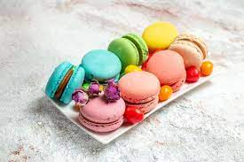

French Macarons
What is so special about macarons?
The macaron is a french sweet treat made of meringue, sugar and ground almond. Anyone who’s ever watched Masterchef or Great British Bake Off knows they’re notoriously tricky to make, and have enjoyed a resurgence in popularity in recent years.